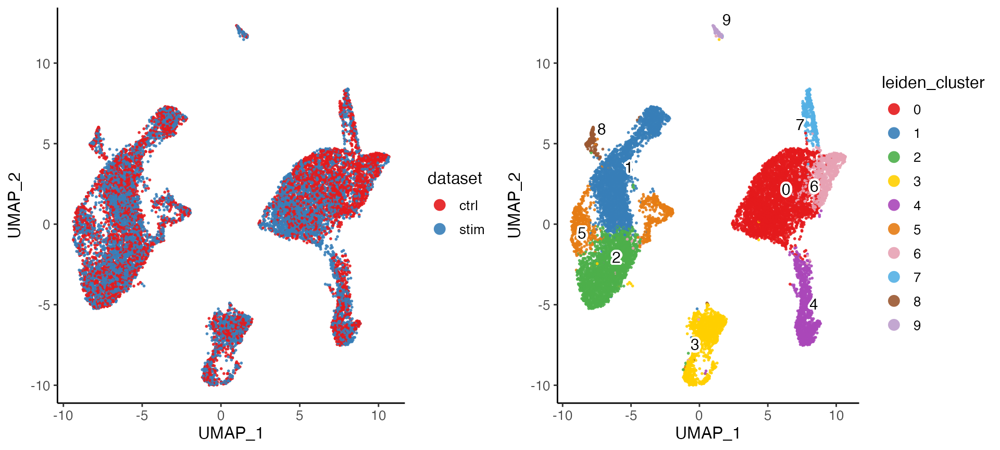
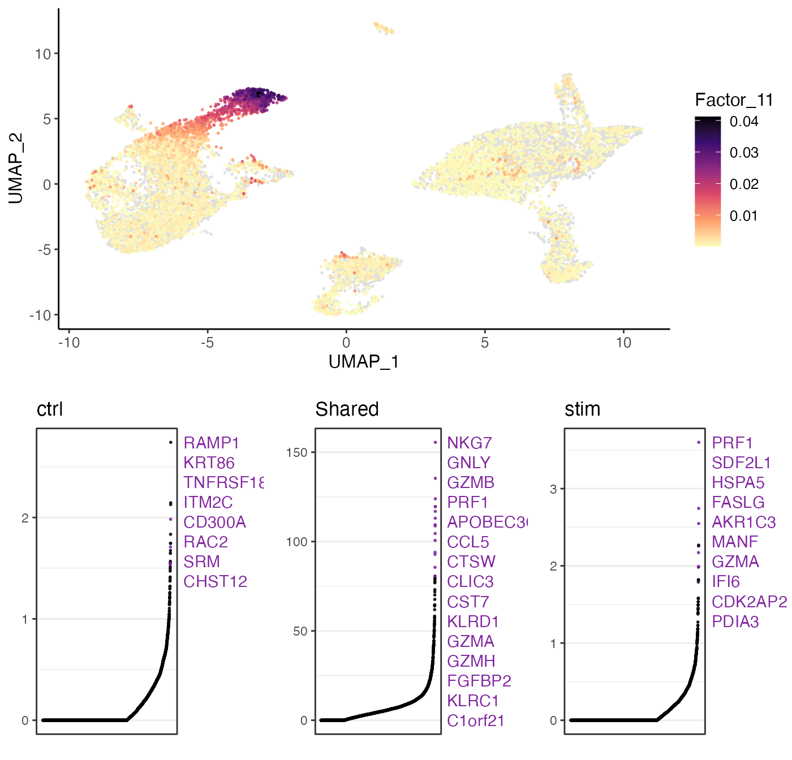
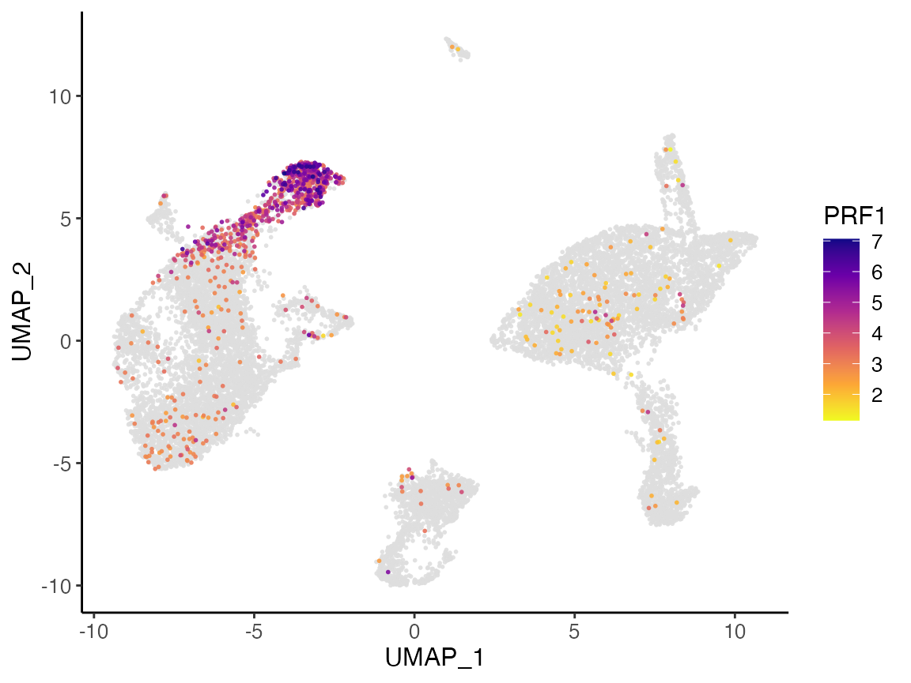
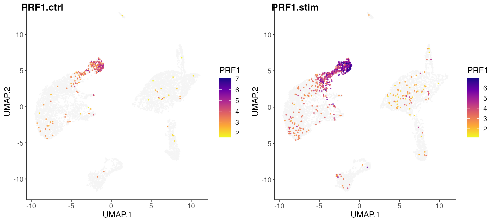
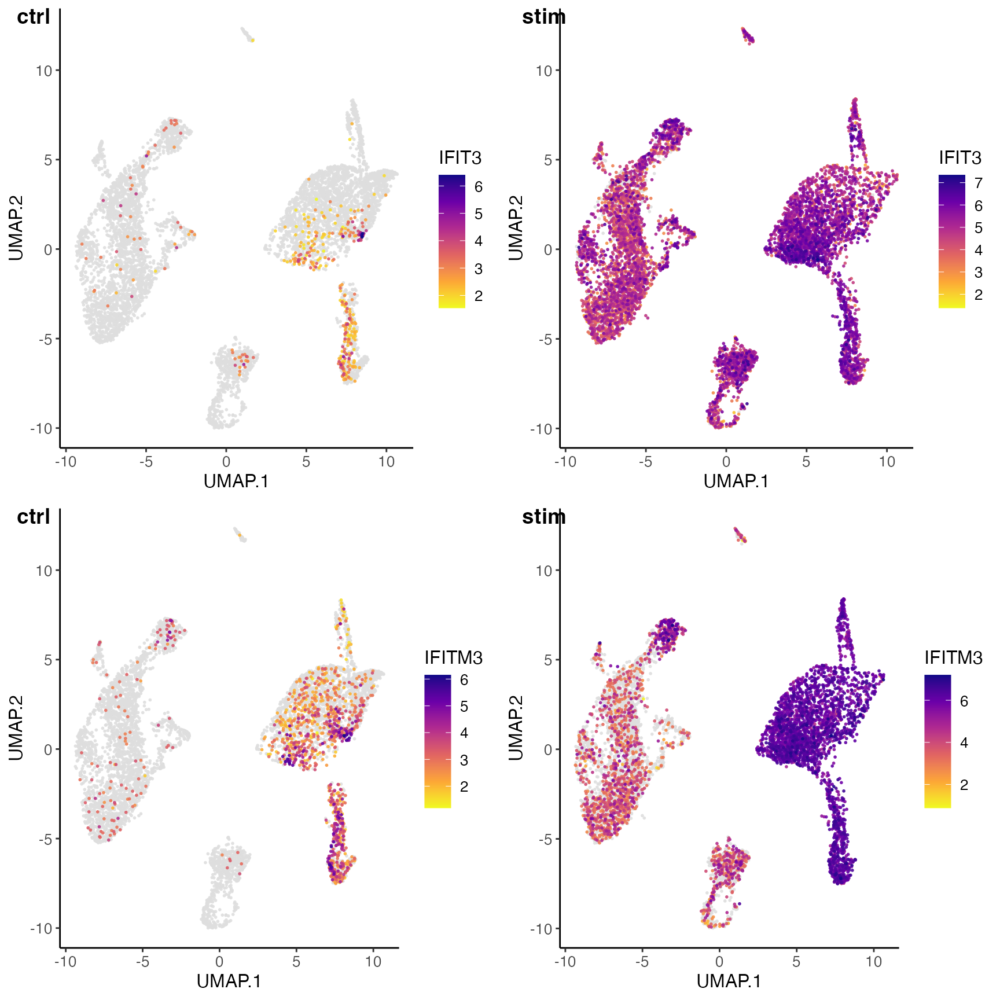

Joint definition of cell types from multiple scRNA-seq datasets
Joshua Sodicoff and Joshua Welch
2023-02-27
Source:vignettes/articles/Integrating_multi_scRNA_data.rmd
Integrating_multi_scRNA_data.rmdThis guide will demonstrate the usage of the Liger package in the style of the R Console, which can be accessed through an R development environment (e.g., RStudio) or directly from the R command line.
Stage I: Preprocessing and Normalization
1. Loading data
For the first portion of this protocol, we will be integrating data from control and interferon-stimulated PBMCs from Kang et al, 2017. The data can be found in the Gene Expression Omnibus, Series GSE96583. This dataset was originally in the form of output from the 10X Cellranger pipeline, though we will directly load downsampled versions of the control and stimulated DGEs here.
For convenience, we have prepared the pre-processed data
which are ready to use. There are two datasets: PBMC control
and PBMC interferon-stimulated. We provided ready-to-use liger object,
which can be easily loaded with importPBMC().
library(rliger)
pbmcLiger <- importPBMC()For creating a liger object from raw counts data or any other types of source, please refer to the detailed tutorial for importing data.
2. Preprocess
Before we can run iNMF on our datasets, we must run several preprocessing steps to normalize expression data to account for differences in sequencing depth and efficiency between cells, identify variably expressed genes, and scale the data so that each gene has the same variance. Note that because nonnegative matrix factorization requires positive values, we do not center the data by subtracting the mean. We also do not log transform the data.
pbmcLiger <- pbmcLiger %>%
normalize() %>%
selectGenes() %>%
scaleNotCenter()Stage II: Integration with Joint Matrix Factorization
3. Determine parameters and perform iNMF integration
We are now able to run integrative non-negative matrix factorization
(iNMF) on the normalized and scaled datasets. The key parameter for this
analysis is k, the number of matrix factors (analogous to
the number of principal components in PCA). In general, we find that a
value of k between 20 and 40 is suitable for most analyses
and that results are robust for choice of k. Because LIGER
is an unsupervised, exploratory approach, there is no single “right”
value for k. In practice, users choose k from
a combination of biological prior knowledge and other information. For
this tutorial, we set k = 20.
pbmcLiger <- runIntegration(pbmcLiger, k = 20)Starting from rliger 2.0.0, we use an optimized implementation of iNMF. Here we deprecated the parameter
threshwhich stands for a convergence detecter in order to speed up each algorithm iteration by omitting the calculation of objective error.
The factorization yields several lower dimension matrices, including the \(H\) matrices of metagene loadings for each cell, the \(W\) matrix of shared factor loadings and the \(V\) matrices of dataset-specific factor loadings. Please refer to liger object documentation for how to access them.
The time consumption of this step is dependent of the size of the
datasets, in terms of number of cells, number of variable genes
selected, and the value of k. The implementation supports
OpenMP multi-threading, and there for using a machine with a number of
cores allocated helps speeding it up.
Stage III: Quantile Normalization and Joint Clustering
4. Align the factors
We can now use the resulting factors to jointly cluster cells and
perform quantile normalization by dataset, factor, and cluster to fully
integrate the datasets. All of this functionality is encapsulated within
the quantileNorm() function, which uses max factor
assignment followed by refinement using a k-nearest neighbors graph.
pbmcLiger <- quantileNorm(pbmcLiger)5. Clustering
The quantileNorm() procedure produces joint clustering
assignments and a low-dimensional representation that integrates the
datasets together. These joint clusters directly from iNMF can be used
for downstream analyses (see below). Alternatively, you can also run
Louvain community detection, an algorithm commonly used for single-cell
data, on the normalized cell factors. The Louvain algorithm excels at
merging small clusters into broad cell classes and thus may be more
desirable in some cases than the maximum factor assignments produced
directly by iNMF.
pbmcLiger <- runCluster(pbmcLiger, resolution = 0.25, nNeighbors = 30)Starting from rliger 2.0.0, cluster labeling will be stored in cell metadata, which can be accessed with
cellMeta(pbmcLiger). Use argumentclusterNameto specify unique variable names for the result can enable storing multiple cluster labeling variables at the same time.
Stage IV: Visualization and Downstream Analysis
6. Generate dimensionality reduced embedding
To visualize the clustering of cells graphically, we can project the normalized cell factors to two or three dimensions. LIGER supports both UMAP and t-SNE for this purpose.
pbmcLiger <- runUMAP(pbmcLiger, n_neighbors = 30, min_dist = 0.3)Starting from rliger 2.0.0, the slot for storing dimensionality reduction matrices will be renamed to “dimReds”. It will be a list that can hold multiple low dimensional matrices that match to the dataset by cell identifiers. Users can access individual matrix with
dimRed(object, "name"). Use argumentdimredNameto specify unique names for the UMAP result so that it allows storing multiple low-dimensional representation matrices at the same time.
7. Create plots
We provide a variety of utilities for visualization and analysis of clustering, gene expression across datasets, and comparisons of cluster assignments. Here we demonstrate several commonly used examples.
plotByDatasetAndCluster() returns two graphs, generated
by t-SNE or UMAP in the previous step. The first colors cells by dataset
of origin, and the second by cluster as determined by previous
clustering step. The plots provide visual confirmation that the datasets
are well aligned and the clusters are consistent with the shape of the
data as revealed by UMAP.
The two subplots can individually be generated with
plotDatasetDimRed() and plotClusterDimRed(),
respectively.
plotByDatasetAndCluster(pbmcLiger)
To directly study the impact of factors on the clustering and
determine what genes load most highly on each factor, we use the
plotGeneLoadings() function, which returns plots of factor
loading on the dimensionality reduction and highly loaded genes by
dataset for each factor.
factorMarkers <- getFactorMarkers(pbmcLiger, dataset1 = "ctrl", dataset2 = "stim")
plotGeneLoadings(pbmcLiger, markerTable = factorMarkers, useFactor = 11)
8. Differential expression
Using the runMarkerDEG() function, we can next identify
gene markers for all clusters. We can also compare expression within
each cluster across datasets, which in this case reveals markers of
interferon-beta stimulation. The function returns a table of data that
allows us to determine the significance of each gene’s differential
expression, including log fold change, area under the curve (auc) and
p-value.
The default parameters performs Wilcoxon rank-sum test at a cluster level:
cluster.results <- runMarkerDEG(pbmcLiger)
head(cluster.results)## feature group avgExpr logFC statistic auc pval
## 1 LINC00115 0 0.06548765 -0.006831338 19062921 0.4998240 7.853272e-01
## 2 NOC2L 0 0.42171394 -0.918042058 17940417 0.4703922 1.451809e-33
## 3 KLHL17 0 0.01231308 -0.009050681 19059126 0.4997245 4.088815e-01
## 4 PLEKHN1 0 0.18786561 0.141525882 19248732 0.5046959 3.409058e-11
## 5 HES4 0 4.77875763 3.499327819 23294848 0.6107838 3.386982e-241
## 6 ISG15 0 13.53868172 2.108323599 25067656 0.6572663 7.671903e-185
## padj pct_in pct_out
## 1 8.183645e-01 0.43184885 0.4662910
## 2 1.239673e-32 2.80701754 8.5583835
## 3 4.694960e-01 0.08097166 0.1360016
## 4 1.313878e-10 1.24156545 0.3011463
## 5 1.329469e-239 30.47233468 8.1212357
## 6 2.522435e-183 71.39001350 64.4744511Alternatively, it is also helpful to identify dataset specific markers within each cluster. For example in this tutorial, we can split data by cluster labeling, and within a cluster, find the markers from interferon-stimulated cells.
datasets.results <- runMarkerDEG(pbmcLiger, conditionBy = "dataset", splitBy = "leiden_cluster")
head(datasets.results$`0`) # Note that the first cluster is "0"## feature group avgExpr logFC statistic auc pval
## 1 LINC00115 ctrl 0.07166558 0.01145033 1706331.0 0.5003471841 7.481448e-01
## 2 NOC2L ctrl 0.66238229 0.44606115 1755645.5 0.5148076676 5.381518e-08
## 3 KLHL17 ctrl 0.02674089 0.02674089 1708145.5 0.5008792497 6.078022e-02
## 4 PLEKHN1 ctrl 0.09743044 -0.16761495 1686271.0 0.4944649933 2.425606e-03
## 5 HES4 ctrl 0.18860594 -8.50750976 777066.5 0.2278590937 7.338249e-270
## 6 ISG15 ctrl 6.06724941 -13.84775223 2253.0 0.0006606469 0.000000e+00
## padj pct_in pct_out
## 1 8.307976e-01 0.4689332 0.4002001
## 2 3.399928e-07 4.3962485 1.4507254
## 3 1.222348e-01 0.1758499 0.0000000
## 4 7.540483e-03 0.6447831 1.7508754
## 5 1.330165e-267 1.2309496 55.4277139
## 6 0.000000e+00 37.8663540 100.0000000The number of significant genes identified by
runMarkerDEG() varies and depends on the datasets used. And
the raw output of the function contains the statistics of all tested
genes in all groups (clusters). In order to pick out the top markers for
each cluster, we strongly suggest using package “dplyr”, which provides
a user-friendly interface for data table manipulation. The following
code chunk first filters the markers which are statistically and
biologically significant. For example, we filter the output by taking
markers which have padj (Benjamini-Hochberg adjusted p-value) less than
0.05 and logFC (log fold change between observations in group versus
out) larger than 3. Then for each cluster, we sort the markers primarily
by its padj value in ascending order. Given that mathematically, the
lowest padj values are rounded to 0 as they are too small, for genes
tying on this metric, we then sort the markers by logFC in descending
order. Finally, we select the top 20 markers for each cluster.
library(dplyr)
cluster.results.sort <- cluster.results %>%
filter(padj < 0.05, logFC > 3) %>%
group_by(group) %>%
arrange(padj, -logFC, .by_group = TRUE) %>%
top_n(20)# rank by logFC from high to low
# Show the markers for cluster 3
cluster.results.sort %>% filter(group == 3)## # A tibble: 20 × 10
## # Groups: group [1]
## feature group avgExpr logFC statistic auc pval padj pct_in
## <chr> <fct> <dbl> <dbl> <dbl> <dbl> <dbl> <dbl> <dbl>
## 1 HLA-DRA 3 17.3 8.39 14100526. 0.799 0 0 97.7
## 2 CD74 3 17.9 6.98 16152993 0.916 0 0 99
## 3 HLA-DPA1 3 14.5 7.73 13702221 0.777 1.20e-300 8.06e-298 87.1
## 4 RPS5 3 17.0 3.20 13758954. 0.780 9.82e-261 5.22e-258 98.2
## 5 HLA-DPB1 3 13.5 6.70 13268518. 0.752 2.85e-250 1.35e-247 81.1
## 6 HLA-DRB1 3 15.3 7.20 13211092. 0.749 4.07e-230 1.53e-227 90
## 7 CCR7 3 14.0 7.13 13007309 0.737 1.68e-223 5.63e-221 82.9
## 8 RPL10A 3 16.2 3.85 12703108 0.720 1.63e-163 3.42e-161 95
## 9 EEF1B2 3 13.1 4.34 12423802. 0.704 9.61e-151 1.75e-148 80
## 10 RPLP0 3 15.5 3.55 12478185 0.707 1.10e-145 1.78e-143 92.4
## 11 HSP90AB1 3 12.4 3.64 12326966. 0.699 1.64e-143 2.55e-141 74.7
## 12 RPL5 3 14.5 4.01 12303018. 0.698 4.56e-135 6.39e-133 87.2
## 13 RPSA 3 14.8 3.95 12264988. 0.695 2.63e-131 3.46e-129 89
## 14 CXCR4 3 12.9 3.79 12112580. 0.687 4.18e-126 4.98e-124 76
## 15 RPL7A 3 14.9 3.02 12189771 0.691 5.58e-124 6.35e-122 89.6
## 16 RAN 3 10.9 3.43 11846094. 0.672 1.83e-113 1.82e-111 66.6
## 17 RPL4 3 13.8 3.25 11916704. 0.676 3.40e-107 2.93e-105 83.3
## 18 NPM1 3 12.2 3.75 11808654. 0.669 3.96e-106 3.34e-104 73.6
## 19 CREM 3 10.1 3.36 11180874. 0.634 1.56e- 73 8.82e- 72 61.6
## 20 GLTSCR2 3 10.2 3.24 11121632 0.631 1.34e- 68 6.96e- 67 63.3
## # ℹ 1 more variable: pct_out <dbl>We can then visualize the expression profiles of individual genes,
such as the differentially expressed genes that we just identified. This
allows us to visually confirm the cluster- or dataset-specific
expression patterns of marker genes. plotGeneDimRed()
returns graphs of gene loading on the dimensionality reduced graph for
each dataset.
plotGeneDimRed(pbmcLiger, "PRF1")
We can also plot the gene expression by dataset.
prf1List <- plotGeneDimRed(pbmcLiger, "PRF1", splitBy = "dataset")
cowplot::plot_grid(plotlist = prf1List, labels = names(prf1List))
We can also use plotGeneDimRed() to compare the loading
of cluster markers within and between datasets.
IFIT3 <- plotGeneDimRed(pbmcLiger, "IFIT3", splitBy = "dataset")
IFITM3 <- plotGeneDimRed(pbmcLiger, "IFITM3", splitBy = "dataset")
cowplot::plot_grid(IFIT3[[1]], IFIT3[[2]], IFITM3[[1]], IFITM3[[2]], ncol = 2, labels = c("ctrl", "stim", "ctrl", "stim"))
R Session Info
## R version 4.3.2 RC (2023-10-30 r85440)
## Platform: aarch64-apple-darwin20 (64-bit)
## Running under: macOS Sonoma 14.4
##
## Matrix products: default
## BLAS: /Library/Frameworks/R.framework/Versions/4.3-arm64/Resources/lib/libRblas.0.dylib
## LAPACK: /Library/Frameworks/R.framework/Versions/4.3-arm64/Resources/lib/libRlapack.dylib; LAPACK version 3.11.0
##
## locale:
## [1] en_US.UTF-8/en_US.UTF-8/en_US.UTF-8/C/en_US.UTF-8/en_US.UTF-8
##
## time zone: America/Detroit
## tzcode source: internal
##
## attached base packages:
## [1] stats graphics grDevices utils datasets methods base
##
## other attached packages:
## [1] dplyr_1.1.4 rliger_1.99.1
##
## loaded via a namespace (and not attached):
## [1] sass_0.4.8 utf8_1.2.4 generics_0.1.3
## [4] stringi_1.8.3 lattice_0.22-5 digest_0.6.34
## [7] magrittr_2.0.3 evaluate_0.23 grid_4.3.2
## [10] fastmap_1.1.1 jsonlite_1.8.8 Matrix_1.6-5
## [13] ggrepel_0.9.5 scattermore_1.2 purrr_1.0.2
## [16] fansi_1.0.6 viridisLite_0.4.2 scales_1.3.0
## [19] codetools_0.2-19 textshaping_0.3.7 jquerylib_0.1.4
## [22] cli_3.6.2 rlang_1.1.3 RcppAnnoy_0.0.22
## [25] uwot_0.1.16 cowplot_1.1.3 munsell_0.5.0
## [28] withr_3.0.0 RANN_2.6.1 cachem_1.0.8
## [31] yaml_2.3.8 parallel_4.3.2 tools_4.3.2
## [34] memoise_2.0.1 colorspace_2.1-0 ggplot2_3.4.4
## [37] sccore_1.0.4 BiocGenerics_0.48.1 vctrs_0.6.5
## [40] R6_2.5.1 stats4_4.3.2 lifecycle_1.0.4
## [43] stringr_1.5.1 S4Vectors_0.40.2 fs_1.6.3
## [46] irlba_2.3.5.1 ragg_1.2.7 leidenAlg_1.1.2
## [49] pkgconfig_2.0.3 desc_1.4.3 pkgdown_2.0.7
## [52] bslib_0.6.1 pillar_1.9.0 gtable_0.3.4
## [55] glue_1.7.0 Rcpp_1.0.12 systemfonts_1.0.5
## [58] highr_0.10 xfun_0.41 tibble_3.2.1
## [61] tidyselect_1.2.0 rstudioapi_0.15.0 knitr_1.45
## [64] farver_2.1.1 igraph_2.0.1.1 htmltools_0.5.7
## [67] labeling_0.4.3 rmarkdown_2.25 RcppPlanc_1.0.0
## [70] compiler_4.3.2